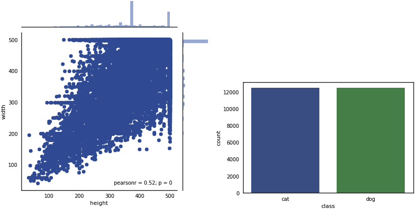
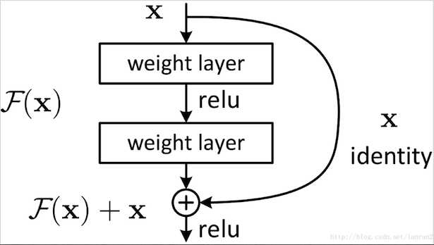

<!DOCTYPE HTML>
<html lang="" >
    <head>
        <meta charset="UTF-8">
        <meta content="text/html; charset=utf-8" http-equiv="Content-Type">
        <title>resnet · GitBook</title>
        <meta http-equiv="X-UA-Compatible" content="IE=edge" />
        <meta name="description" content="">
        <meta name="generator" content="GitBook 3.2.3">
        
        
        
    
    <link rel="stylesheet" href="../../gitbook/style.css">

    
            
                
                <link rel="stylesheet" href="../../gitbook/gitbook-plugin-highlight/website.css">
                
            
                
                <link rel="stylesheet" href="../../gitbook/gitbook-plugin-search/search.css">
                
            
                
                <link rel="stylesheet" href="../../gitbook/gitbook-plugin-fontsettings/website.css">
                
            
        

    

    
        
    
        
    
        
    
        
    
        
    
        
    

        
    
    
    <meta name="HandheldFriendly" content="true"/>
    <meta name="viewport" content="width=device-width, initial-scale=1, user-scalable=no">
    <meta name="apple-mobile-web-app-capable" content="yes">
    <meta name="apple-mobile-web-app-status-bar-style" content="black">
    <link rel="apple-touch-icon-precomposed" sizes="152x152" href="../../gitbook/images/apple-touch-icon-precomposed-152.png">
    <link rel="shortcut icon" href="../../gitbook/images/favicon.ico" type="image/x-icon">

    
    <link rel="next" href="../part2/" />
    
    
    <link rel="prev" href="./" />
    

    </head>
    <body>
        
<div class="book">
    <div class="book-summary">
        
            
<div id="book-search-input" role="search">
    <input type="text" placeholder="Type to search" />
</div>

            
                <nav role="navigation">
                


<ul class="summary">
    
    

    

    
        
        
    
        <li class="chapter " data-level="1.1" data-path="../../">
            
                <a href="../../">
            
                    
                    Introduction
            
                </a>
            

            
        </li>
    
        <li class="chapter " data-level="1.2" data-path="./">
            
                <a href="./">
            
                    
                    Part I Deep Learning
            
                </a>
            

            
            <ul class="articles">
                
    
        <li class="chapter active" data-level="1.2.1" data-path="resnet.html">
            
                <a href="resnet.html">
            
                    
                    resnet
            
                </a>
            

            
        </li>
    

            </ul>
            
        </li>
    
        <li class="chapter " data-level="1.3" data-path="../part2/">
            
                <a href="../part2/">
            
                    
                    Part II Deeper Tricks
            
                </a>
            

            
            <ul class="articles">
                
    
        <li class="chapter " data-level="1.3.1" data-path="../part2/super_convergence.html">
            
                <a href="../part2/super_convergence.html">
            
                    
                    超收敛
            
                </a>
            

            
        </li>
    

            </ul>
            
        </li>
    

    

    <li class="divider"></li>

    <li>
        <a href="https://www.gitbook.com" target="blank" class="gitbook-link">
            Published with GitBook
        </a>
    </li>
</ul>


                </nav>
            
        
    </div>

    <div class="book-body">
        
            <div class="body-inner">
                
                    

<div class="book-header" role="navigation">
    

    <!-- Title -->
    <h1>
        <i class="fa fa-circle-o-notch fa-spin"></i>
        <a href="../.." >resnet</a>
    </h1>
</div>


                    <div class="page-wrapper" tabindex="-1" role="main">
                        <div class="page-inner">
                            
<div id="book-search-results">
    <div class="search-noresults">
    
                                <section class="normal markdown-section">
                                
                                <h1 id="resnet">resnet</h1>
<p>pytorch &#x5B9E;&#x73B0;resnet&#x7CFB;&#x5217;&#xFF0C; &#x6570;&#x636E;&#x96C6;&#x4F7F;&#x7528;Dogs VS Cats</p>
<h2 id="1-&#x6570;&#x636E;&#x96C6;">1. &#x6570;&#x636E;&#x96C6;</h2>
<p>Dogs Vs Cats&#x662F;kaggle&#x7ADE;&#x8D5B;&#x4E2D;&#x7ECF;&#x5178;&#x7684;&#x5165;&#x95E8;&#x7EA7;&#x6570;&#x636E;&#x96C6;&#xFF0C;&#x8BAD;&#x7EC3;&#x96C6;&#x5305;&#x542B;25000&#x5F20;&#x56FE;&#x7247;&#xFF0C;&#x5B98;&#x65B9;&#x540D;&#x79F0;&#x4E3A;<code>train.zip</code>, &#x6D4B;&#x8BD5;&#x96C6;&#x5305;&#x542B;&#x5F20;&#x56FE;&#x7247;&#xFF0C;&#x5B98;&#x65B9;&#x540D;&#x79F0;&#x4E3A;<code>test1.zip</code>.&#x6570;&#x636E;&#x5206;&#x4E3A;&#x4E24;&#x7C7B;:<code>dog</code> &#x548C; <code>cat</code></p>
<ul>
<li><p>&#x8BAD;&#x7EC3;&#x96C6;</p>
<pre><code class="lang-shell"># &#x89E3;&#x538B;&#x56FE;&#x7247;
user$ unzip train.zip
</code></pre>
<p>&#x8BAD;&#x7EC3;&#x96C6;&#x7684;25000&#x5F20;&#x56FE;&#x7247;&#x89E3;&#x538B;&#x540E;&#x5747;&#x5728;<code>train</code>&#x76EE;&#x5F55;&#x4E0B;&#xFF0C;&#x547D;&#x540D;&#x65B9;&#x5F0F;&#x4E3A;<code>class.id.jpg</code>&#xFF0C; &#x5176;&#x4E2D;<code>class</code>&#x786E;&#x5B9A;&#x4E86;&#x8BE5;&#x56FE;&#x7247;&#x7684;&#x7C7B;&#x522B;, id&#x662F;&#x56FE;&#x7247;&#x7684;&#x552F;&#x4E00;ID&#xFF0C;&#x4F8B;&#x5982;&#xFF1A;<code>dog.151521.jpg</code>.</p>
</li>
<li><p>&#x6D4B;&#x8BD5;&#x96C6;</p>
<pre><code class="lang-shell"># &#x89E3;&#x538B;&#x56FE;&#x7247;
user$ unzip test1.zip
</code></pre>
<p>&#x6D4B;&#x8BD5;&#x96C6;&#x89E3;&#x538B;&#x540E;&#x7684;&#x6240;&#x6709;&#x56FE;&#x7247;&#x5747;&#x5728;<code>test1</code>&#x76EE;&#x5F55;&#x4E0B;&#xFF0C; &#x6CA1;&#x6709;&#x6807;&#x7B7E;&#x3002;&#x547D;&#x540D;&#x65B9;&#x5F0F;&#x4E3A;<code>id.jpg</code>.</p>
</li>
</ul>
<p>&#x4E3A;&#x4E86;&#x65B9;&#x4FBF;&#x8BAD;&#x7EC3;&#x548C;&#x505A;&#x7EDF;&#x8BA1;&#x5DE5;&#x4F5C;&#xFF0C; &#x6211;&#x4EEC;&#x4E8B;&#x5148;&#x5BF9;&#x56FE;&#x7247;&#x7684;&#x4FE1;&#x606F;&#x505A;&#x4E00;&#x4E2A;&#x7EDF;&#x8BA1;&#x3002;&#x5305;&#x62EC;&#x56FE;&#x7247;&#x540D;&#x79F0;&#x3001;&#x8DEF;&#x5F84;&#x3001;&#x7C7B;&#x522B;&#x3001;&#x957F;&#x5BBD;&#x3001;&#x5747;&#x503C;&#x548C;&#x6807;&#x51C6;&#x5DEE;&#x3002;</p>
<pre><code class="lang-python">root = <span class="hljs-string">&apos;/mnt/data/codewang/dog_cat&apos;</span>
test_data  = root + <span class="hljs-string">&apos;/test1&apos;</span>
train_data = root + <span class="hljs-string">&apos;/train&apos;</span>

<span class="hljs-function"><span class="hljs-keyword">def</span> <span class="hljs-title">allImages</span><span class="hljs-params">(path)</span>:</span>
    info = pd.DataFrame(columns=[<span class="hljs-string">&apos;name&apos;</span>, <span class="hljs-string">&apos;class&apos;</span>, <span class="hljs-string">&apos;height&apos;</span>, <span class="hljs-string">&apos;width&apos;</span>, <span class="hljs-string">&apos;path&apos;</span>])
    <span class="hljs-keyword">with</span> tqdm(os.listdir(path)) <span class="hljs-keyword">as</span> bar:
        <span class="hljs-keyword">for</span> file <span class="hljs-keyword">in</span> bar:
            <span class="hljs-keyword">if</span> file.endswith(<span class="hljs-string">&apos;.jpg&apos;</span>):
                file_path = path + <span class="hljs-string">&apos;/&apos;</span> + file
                img  = Image.open(file_path)

                info = info.append({
                    <span class="hljs-string">&apos;name&apos;</span>   : file,
                    <span class="hljs-string">&apos;class&apos;</span>  : file.split(<span class="hljs-string">&apos;.&apos;</span>)[<span class="hljs-number">0</span>],
                    <span class="hljs-string">&apos;height&apos;</span> : img.height,
                    <span class="hljs-string">&apos;width&apos;</span>  : img.width,
                    <span class="hljs-string">&apos;path&apos;</span>   : file_path
                }, ignore_index=<span class="hljs-keyword">True</span>)
    <span class="hljs-keyword">return</span> info
</code></pre>
<p><strong>&#x7EDF;&#x8BA1;&#x56FE;&#x7247;&#x7684;&#x5C3A;&#x5BF8;&#x5206;&#x5E03;</strong></p>
<pre><code class="lang-python"><span class="hljs-keyword">import</span> seaborn <span class="hljs-keyword">as</span> sns; sns.set(style=<span class="hljs-string">&quot;white&quot;</span>, color_codes=<span class="hljs-keyword">True</span>)
<span class="hljs-comment"># &#x5E26;&#x5206;&#x5E03;&#x7684;&#x6563;&#x70B9;&#x5173;&#x7CFB;&#x56FE;</span>
<span class="hljs-comment"># &#x6709;&#x4E24;&#x5F20;&#x79BB;&#x7FA4;&#x56FE;&#xFF0C;&#x6682;&#x65F6;&#x4E0D;&#x7EDF;&#x8BA1;</span>
plot_data = info[info[<span class="hljs-string">&apos;width&apos;</span>] &lt; <span class="hljs-number">600</span>]
g = sns.jointplot(x=<span class="hljs-string">&apos;height&apos;</span>, y=<span class="hljs-string">&apos;width&apos;</span>, data=plot_data)

<span class="hljs-comment"># dog cat&#x5360;&#x6BD4;</span>
_ = sns.countplot(x=<span class="hljs-string">&quot;class&quot;</span>, data=info)
</code></pre>
<p></p>
<p> <strong>&#x7EDF;&#x8BA1;&#x5747;&#x503C;&#x548C;&#x65B9;&#x5DEE;</strong></p>
<pre><code class="lang-python"><span class="hljs-function"><span class="hljs-keyword">def</span> <span class="hljs-title">calc_mean</span><span class="hljs-params">(file_list)</span>:</span>
    mean = np.zeros(<span class="hljs-number">3</span>)
    <span class="hljs-keyword">for</span> i, file <span class="hljs-keyword">in</span> enumerate(file_list):
        _mean = (cv2.imread(file)/<span class="hljs-number">255</span>).mean(axis=(<span class="hljs-number">0</span>,<span class="hljs-number">1</span>))
        mean+=_mean
        print(<span class="hljs-string">&apos;%d / %d&apos;</span> % (i, len(file_list)), end=<span class="hljs-string">&apos;\r&apos;</span>)
    print(<span class="hljs-string">&apos;&apos;</span>)
    <span class="hljs-keyword">return</span> mean / len(file_list)

<span class="hljs-function"><span class="hljs-keyword">def</span> <span class="hljs-title">calc_var</span><span class="hljs-params">(file_list, mean)</span>:</span>
    var = np.zeros(<span class="hljs-number">3</span>)
    <span class="hljs-keyword">for</span> i, file <span class="hljs-keyword">in</span> enumerate(file_list):
        _var = (((cv2.imread(file)/<span class="hljs-number">255</span>) - mean)**<span class="hljs-number">2</span>).mean(axis=(<span class="hljs-number">0</span>,<span class="hljs-number">1</span>))
        var += _var
        print(<span class="hljs-string">&apos;%d / %d&apos;</span> % (i, len(file_list)), end=<span class="hljs-string">&apos;\r&apos;</span>)
    print(<span class="hljs-string">&apos;&apos;</span>)
    <span class="hljs-keyword">return</span> var / len(file_list)

mean = calc_mean(info[<span class="hljs-string">&apos;path&apos;</span>])
var  = calc_var(info[<span class="hljs-string">&apos;path&apos;</span>], mean)
std  = np.sqrt(var)

<span class="hljs-comment"># outputs</span>
<span class="hljs-comment"># 24999 / 25000</span>
<span class="hljs-comment"># 24999 / 25000</span>
<span class="hljs-comment">#</span>
<span class="hljs-comment"># mean : array([0.41695606, 0.45508163, 0.48832284])</span>
<span class="hljs-comment"># var  : array([0.06703861, 0.06574376, 0.06910507])</span>
<span class="hljs-comment"># std  : array([0.25891816, 0.25640547, 0.26287844])</span>
</code></pre>
<h2 id="2-resual-block">2. Resual Block</h2>
<p>Resual Block&#x7684;&#x7ED3;&#x6784;&#x5982;&#x4E0B;&#x56FE;&#x6240;&#x793A;&#xFF0C;&#x662F;&#x7531;He kaiming&#x5728;&#x8BBA;&#x6587;<a href="https://arxiv.org/abs/1512.03385" target="_blank"><deep residual="" learning="" for="" image="" recognition=""></deep></a>&#x4E2D;&#x63D0;&#x51FA;&#x3002;</p>
<p>Resnet&#x5728;2015&#x5E74;ImangeNet&#x7684;classification&#x4EFB;&#x52A1;&#x4E0A;&#x83B7;&#x5F97;&#x4E86;&#x51A0;&#x519B;.</p>
<p></p>
<p>&#x53EF;&#x4EE5;&#x770B;&#x5230;&#x4E0E;&#x4F20;&#x7EDF;&#x7684;&#x5377;&#x79EF;&#x5757;&#x7684;&#x4E0D;&#x540C;&#x5C31;&#x662F;&#x589E;&#x52A0;&#x4E86;&#x4E00;&#x4E2A;<code>shortcut</code>.He kaiming &#x7ECF;&#x8FC7;&#x8BD5;&#x9A8C;&#x53D1;&#x73B0;&#x968F;&#x7740;&#x7F51;&#x7EDC;&#x7684;&#x5C42;&#x6570;&#x7684;&#x589E;&#x52A0;&#x7F51;&#x7EDC;&#x7684;&#x6027;&#x80FD;&#x5E76;&#x6CA1;&#x6709;&#x50CF;&#x60F3;&#x8C61;&#x4E2D;&#x90A3;&#x6837;&#x968F;&#x4E4B;&#x589E;&#x957F;&#xFF0C; &#x56E0;&#x6B64;&#x4ED6;&#x8BA4;&#x4E3A;&#x6DF1;&#x5C42;&#x7684;&#x7F51;&#x7EDC;&#x5E76;&#x4E0D;&#x662F;&#x5B66;&#x4E60;&#x80FD;&#x529B;&#x4E0D;&#x5F3A;&#xFF0C;&#x800C;&#x662F;<strong>&#x6CA1;&#x6709;&#x5B66;&#x4E60;&#x597D;</strong></p>
<blockquote>
<p>Recent evidence reveals that <strong>network depth is of crucial importance</strong>,  and leading results on the challenging ImageNet dataset all exploit &quot;very deep&quot; models, with a depth of sixteen to thirty. Many other non-trivial visual recognition tasks have also greatly benefited from very deep models.</p>
<pre><code>Driven by the significance of depth, a questions arises: **Is learning better networks as easy as stacking more layers ?** An obstacle to answering this question was **the notorious problem of vanishing/exploding gradients**
</code></pre><p>&#x969C;&#x788D;&#x6211;&#x56DE;&#x7B54;&#x8FD9;&#x4E2A;&#x95EE;&#x9898;&#x7684;&#x662F;&#xFF1A;&#x81ED;&#x540D;&#x662D;&#x8457;&#x7684;&#x68AF;&#x5EA6;&#x6D88;&#x5931;/&#x7206;&#x70B8;&#x95EE;&#x9898;&#x3002;</p>
<p>This problem , however , has been largely addressed by <strong>normalization initialization and intermediated normalization layers</strong> , which enable networks with tens of layers to start converging&#xFF08;&#x6536;&#x655B;&#xFF09; for stochastic gradient descent(SGD) with back-propagation.</p>
<p>&#x4F46;&#x662F;&#x68AF;&#x5EA6;&#x6D88;&#x5931;/&#x7206;&#x70B8;&#x7684;&#x95EE;&#x9898;&#x5DF2;&#x7ECF;&#x5F88;&#x5927;&#x7A0B;&#x5EA6;&#x4E0A;&#x88AB;&#x53C2;&#x6570;&#x521D;&#x59CB;&#x5316;&#x65B9;&#x6CD5;&#xFF08;Xaver&#x3001;He&#xFF09; &#x548C; Batch Normalization Layers&#x89E3;&#x51B3;&#x4E86;&#x3002; </p>
<p>with the network depth increasing, accuracy gets saturated (which might be unsurprising) and then degrades rapidly. such degradation is not caused by overfitting. And adding more layers to suitably deep model leads to highter training error.</p>
<p>&#x968F;&#x7740;&#x7F51;&#x7EDC;&#x5C42;&#x6570;&#x7684;&#x589E;&#x52A0;&#xFF0C;&#x6B63;&#x786E;&#x7387;&#x7EC4;&#x4EF6;&#x8D8B;&#x8FD1;&#x4E8E;&#x9971;&#x548C;&#xFF0C;&#x7136;&#x540E;&#x5F00;&#x59CB;&#x4E0B;&#x964D;&#x3002;&#x5E76;&#x4E14;&#x589E;&#x52A0;&#x7F51;&#x7EDC;&#x7684;&#x5C42;&#x6570;&#x8FD8;&#x5BFC;&#x81F4;&#x8BAD;&#x7EC3;&#x8BEF;&#x5DEE;&#x589E;&#x52A0;&#xFF0C;&#x6240;&#x4EE5;&#x8BF4;&#x5BFC;&#x81F4;&#x6B63;&#x786E;&#x7387;&#x4E0B;&#x964D;&#x7684;&#x539F;&#x56E0;&#x4E0D;&#x662F;&#x8FC7;&#x62DF;&#x5408;&#x3002;</p>
<p>Let us consider a shallower architecture and its deeper conterpart taht adds more layers onto it. There exists a solution by construction to the deeper model: <strong>the added layers are identity mapping, and the other layers are copied from the learned shallower model</strong></p>
<p>&#x6211;&#x4EEC;&#x5047;&#x8BBE;&#x4E00;&#x4E2A;&#x6D45;&#x5C42;&#x7684;&#x7F51;&#x7EDC;&#xFF0C;&#x5BF9;&#x5176;&#x589E;&#x52A0;&#x4E00;&#x4E9B;&#x5C42;&#x4F7F;&#x5176;&#x53D8;&#x4E3A;&#x6DF1;&#x5C42;&#x7684;&#x6A21;&#x578B;&#x3002;&#x4E3A;&#x4E86;&#x8FD8;&#x539F;&#x5B83;&#x6211;&#x4E48;&#x6709;&#x4E00;&#x4E2A;&#x4ECE;&#x7ED3;&#x6784;&#x4E0A;&#x4E0B;&#x624B;&#x7684;&#x65B9;&#x6CD5;&#x5C31;&#x662F;&#x8BA9;&#x4ED6;&#x589E;&#x52A0;&#x7684;&#x5C42;&#x662F;<strong>&#x6052;&#x7B49;&#x53D8;&#x6362;</strong></p>
</blockquote>
<p>&#x603B;&#x7ED3;&#x4E0B;&#x6765;&#x5C31;&#x662F;resnet&#x60F3;&#x8981;&#x89E3;&#x51B3;&#x7684;&#x5E76;&#x4E0D;&#x662F;&#x68AF;&#x5EA6;&#x6D88;&#x5931;&#x548C;&#x68AF;&#x5EA6;&#x7206;&#x70B8;&#x95EE;&#x9898;&#xFF0C;&#x800C;&#x662F;&#x6DF1;&#x5C42;&#x7F51;&#x7EDC;&#x5982;&#x4F55;&#x66F4;&#x597D;&#x7684;&#x5B66;&#x4E60;&#x3002;&#x4F46;&#x662F;&#x901A;&#x8FC7;&#x589E;&#x52A0;<code>shortcut</code>&#x53EF;&#x4EE5;&#x4F7F;&#x5F97;&#x7F51;&#x8DEF;&#x81EA;&#x5DF1;&#x9009;&#x62E9;&#x591A;&#x6DF1;&#x3002;&#x56E0;&#x4E3A;&#x589E;&#x52A0;&#x4E86;<code>shortcut</code>&#x4E4B;&#x540E;&#x7F51;&#x7EDC;&#x5B8C;&#x5168;&#x53EF;&#x4EE5;&#x5C06;&#x8FD9;&#x4E00;&#x5C42;&#x53D8;&#x4E3A;&#x4E00;&#x4E2A;&#x6052;&#x7B49;&#x53D8;&#x6362;&#x3002;</p>
<p>&#x6211;&#x4EEC;&#x4ECE;&#x6570;&#x5B66;&#x7684;&#x89D2;&#x5EA6;&#x6765;&#x770B;&#x770B;&#x4E3A;&#x4EC0;&#x4E48;resual block&#x6709;&#x6548;&#xFF1A;</p>
<p>&#x5728;&#x6CA1;&#x6709;<code>shortcut</code>&#x65F6;&#xFF0C;&#x7F51;&#x7EDC;&#x7684;&#x6BCF;&#x4E00;&#x5C42;&#x5B66;&#x4E60;&#x4E00;&#x4E2A;&#x6620;&#x5C04;<script type="math/tex; ">y = F_w(x)</script> , &#x589E;&#x52A0;&#x4E86;<code>shortcut</code>&#x7684;&#x6A21;&#x578B;&#xFF0C;&#x6BCF;&#x4E00;&#x5C42;&#x5B66;&#x4E60;&#x4E5F;&#x662F;&#x4E00;&#x4E2A;&#x6620;&#x5C04;<script type="math/tex; ">y=F_w(x) + x</script></p>
<p>&#x4E5F;&#x5C31;&#x662F;&#x8BF4;&#x589E;&#x52A0;&#x4E86;<code>shortcut</code>&#x540E;&#x7F51;&#x7EDC;<script type="math/tex; ">F_w</script>&#x5B66;&#x4E60;&#x7684;&#x662F;x&#x5230;y&#x7684;&#x53D8;&#x6362;&#x91CF;,&#x5373;<strong>&#x6B8B;&#x5DEE;</strong>&#xFF0C;&#x8FD9;&#x6837;&#x7F51;&#x7EDC;&#x5C31;&#x5BF9;<strong>&#x8F93;&#x5165;&#x91CF;&#x7684;&#x53D8;&#x5316;</strong>&#x66F4;&#x52A0;&#x654F;&#x611F;&#xFF0C;&#x90A3;&#x4E48;&#x5C31;&#x80FD;&#x4EA7;&#x751F;&#x66F4;&#x6709;&#x6548;&#x7684;&#x68AF;&#x5EA6;&#x3002;<code>&#x8F93;&#x5165;&#x91CF;&#x672C;&#x8EAB;&#x5C31;&#x88AB;&#x5F52;&#x4E00;&#x5316;&#x5230;&#x4E86;0~1&#xFF0C; &#x5176;&#x53D8;&#x5316;&#x91CF;&#x672C;&#x8EAB;&#x5C31;&#x5F88;&#x5C0F;</code></p>

                                
                                </section>
                            
    </div>
    <div class="search-results">
        <div class="has-results">
            
            <h1 class="search-results-title"><span class='search-results-count'></span> results matching "<span class='search-query'></span>"</h1>
            <ul class="search-results-list"></ul>
            
        </div>
        <div class="no-results">
            
            <h1 class="search-results-title">No results matching "<span class='search-query'></span>"</h1>
            
        </div>
    </div>
</div>

                        </div>
                    </div>
                
            </div>

            
                
                <a href="./" class="navigation navigation-prev " aria-label="Previous page: Part I Deep Learning">
                    <i class="fa fa-angle-left"></i>
                </a>
                
                
                <a href="../part2/" class="navigation navigation-next " aria-label="Next page: Part II Deeper Tricks">
                    <i class="fa fa-angle-right"></i>
                </a>
                
            
        
    </div>

    <script>
        var gitbook = gitbook || [];
        gitbook.push(function() {
            gitbook.page.hasChanged({"page":{"title":"resnet","level":"1.2.1","depth":2,"next":{"title":"Part II Deeper Tricks","level":"1.3","depth":1,"path":"docs/part2/README.md","ref":"docs/part2/README.md","articles":[{"title":"超收敛","level":"1.3.1","depth":2,"path":"docs/part2/super_convergence.md","ref":"docs/part2/super_convergence.md","articles":[]}]},"previous":{"title":"Part I Deep Learning","level":"1.2","depth":1,"path":"docs/part1/README.md","ref":"docs/part1/README.md","articles":[{"title":"resnet","level":"1.2.1","depth":2,"path":"docs/part1/resnet.md","ref":"docs/part1/resnet.md","articles":[]}]},"dir":"ltr"},"config":{"gitbook":"*","theme":"default","variables":{},"plugins":["mathjax"],"pluginsConfig":{"mathjax":{"forceSVG":false,"version":"2.6-latest"},"highlight":{},"search":{},"lunr":{"maxIndexSize":1000000,"ignoreSpecialCharacters":false},"sharing":{"facebook":true,"twitter":true,"google":false,"weibo":false,"instapaper":false,"vk":false,"all":["facebook","google","twitter","weibo","instapaper"]},"fontsettings":{"theme":"white","family":"sans","size":2},"theme-default":{"styles":{"website":"styles/website.css","pdf":"styles/pdf.css","epub":"styles/epub.css","mobi":"styles/mobi.css","ebook":"styles/ebook.css","print":"styles/print.css"},"showLevel":false}},"structure":{"langs":"LANGS.md","readme":"README.md","glossary":"GLOSSARY.md","summary":"SUMMARY.md"},"pdf":{"pageNumbers":true,"fontSize":12,"fontFamily":"Arial","paperSize":"a4","chapterMark":"pagebreak","pageBreaksBefore":"/","margin":{"right":62,"left":62,"top":56,"bottom":56}},"styles":{"website":"styles/website.css","pdf":"styles/pdf.css","epub":"styles/epub.css","mobi":"styles/mobi.css","ebook":"styles/ebook.css","print":"styles/print.css"}},"file":{"path":"docs/part1/resnet.md","mtime":"2018-10-08T11:39:08.000Z","type":"markdown"},"gitbook":{"version":"3.2.3","time":"2018-10-08T11:42:00.188Z"},"basePath":"../..","book":{"language":""}});
        });
    </script>
</div>

        
    <script src="../../gitbook/gitbook.js"></script>
    <script src="../../gitbook/theme.js"></script>
    
        
        <script src="https://cdn.mathjax.org/mathjax/2.6-latest/MathJax.js?config=TeX-AMS-MML_HTMLorMML"></script>
        
    
        
        <script src="../../gitbook/gitbook-plugin-mathjax/plugin.js"></script>
        
    
        
        <script src="../../gitbook/gitbook-plugin-search/search-engine.js"></script>
        
    
        
        <script src="../../gitbook/gitbook-plugin-search/search.js"></script>
        
    
        
        <script src="../../gitbook/gitbook-plugin-lunr/lunr.min.js"></script>
        
    
        
        <script src="../../gitbook/gitbook-plugin-lunr/search-lunr.js"></script>
        
    
        
        <script src="../../gitbook/gitbook-plugin-sharing/buttons.js"></script>
        
    
        
        <script src="../../gitbook/gitbook-plugin-fontsettings/fontsettings.js"></script>
        
    

    </body>
</html>

